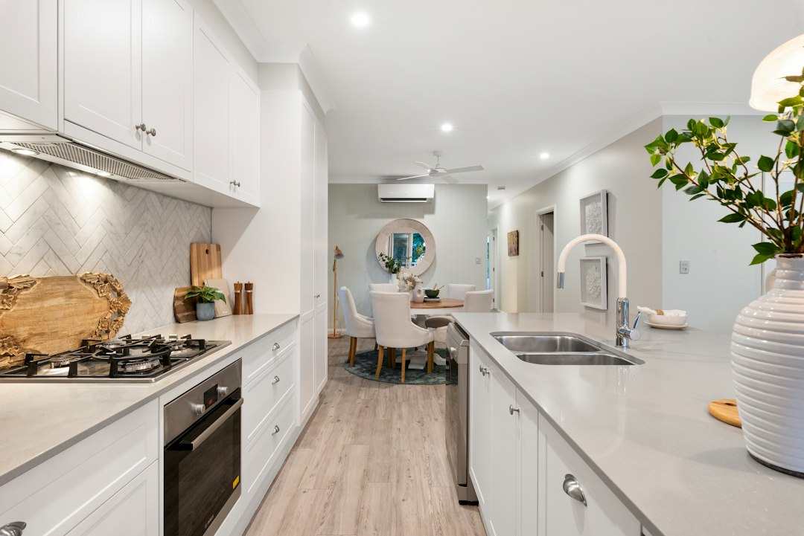

For homeowners comparing kitchen renovation brisbane options, the practical decision is not just style, but scope, licensing, materials, timing, storage and how clearly each quote explains the work.
Kitchen Renovation Brisbane Explained
The published guide for Kitchen Renovation Brisbane frames the job around a few common pain points: outdated finishes, poor storage, inefficient layouts and worn benchtops. That is a useful starting list, because each problem changes the quote. A surface refresh is different from a layout change, and a layout change can affect plumbing, electrical work, cabinetry design and appliance placement.
Before asking for pricing, write down what is staying, what is moving and what must be replaced. A clear brief should include cabinet condition, benchtop preference, splashback finish, storage issues, lighting gaps and appliance plans. If the kitchen has a small footprint, measure the awkward corners, pantry limits and overhead areas so the quote responds to the actual room.
Ask each renovator to separate the visible selections from the behind the scenes work. Useful quote questions include:
- Is cabinetry custom made, flat pack, refaced or a mix?
- Are benchtops, splashbacks, lighting and appliance integration included?
- Which licensed trades are needed for plumbing and electrical changes?
- Is the quote fixed price, and what selections could change it?
- What workmanship warranty is included?
Budget Bands and Scope Decisions
The source guide gives a broad Brisbane cost range of $15,000 to $60,000 plus, with budget renovations starting from $15,000 to $25,000, mid range projects from $30,000 to $60,000, and premium custom kitchens exceeding $40,000 to $80,000 plus. Those bands should be read as scope signals, not promises, because cabinetry, materials and layout changes can move a project quickly.
Cabinetry is identified as the largest single expense in many projects, accounting for 25 to 40 percent of the total budget. That makes storage planning a cost control tool. A homeowner who needs better use of corners, overhead cupboards or a walk in pantry should decide early whether the budget supports new cabinet construction, premium hardware and detailed internal storage.
The page also notes fixed price quotes with no hidden surprises. For a reader, the practical check is whether the quote defines exclusions. Demolition, disposal, appliance supply, plumbing relocations, electrical changes, splashback installation and final painting should be either included or clearly left out. Ambiguous inclusions make two quotes look comparable when they are not.
Materials, Storage and Functional Layout
Material choice affects durability, cost and compliance. The source guide mentions laminate, porcelain and silica free stone alternatives, and notes that traditional engineered quartz is now banned due to silicosis concerns. It also says Caesarstone offers silica free Mineral ranges as alternatives. Treat that as a prompt to ask exactly what product is being quoted, not just what colour or finish is shown on a sample board.
Storage deserves the same level of detail. Pull out systems, corner carousel units, overhead storage and walk in pantry designs are listed in the guide, and they answer different problems. A corner unit can recover hard to reach space, while overhead storage may suit infrequently used items. A walk in pantry can help if the existing kitchen lacks food storage, but it may not be practical in every floor plan.
For layout, focus on movement between preparation space, cooking, sink access and appliance doors. The better question is not whether the kitchen looks new, but whether the finished room removes the daily friction that caused the renovation in the first place.
Licensing, Trades and Accountability
The source guide says specialists hold current QBCC licences and states that a QBCC licence is required for building work over $3,300 in Queensland. It also states that licensed plumbers and electricians are required by Queensland law. Readers should verify these points before work starts, especially when a quote includes plumbing, power, lighting or changes that go beyond cosmetic replacement.
Licensing is not a substitute for a well described scope. Ask who is responsible for coordinating trades, how defects are handled, and whether the quoted workmanship warranty is written into the agreement. If several trades are involved, the handover between cabinetry, benchtops, splashbacks, plumbing and electrical work can be where delays and misunderstandings appear.
Brisbane homes vary from older cottages to modern apartments, a distinction the source guide also recognises. Older homes may raise layout and access questions, while apartments may require attention to body corporate rules, lift access, parking and noise windows. Those are project management questions to raise during quoting rather than after demolition has begun.
Planning the Timeline and Next Step
The stated timing bands are 2 to 4 weeks for makeovers, 4 to 8 weeks for standard renovations, and 8 to 12 weeks for custom projects. Use those ranges to plan temporary cooking, delivery timing and decision deadlines. A custom kitchen usually needs earlier sign off on cabinetry, benchtops, hardware, lighting and appliances, because one late selection can affect several trades.
A practical comparison process is to collect like for like quotes, confirm licensing, then compare the inclusions line by line. The related kitchen reno Brisbane guide may help readers think through the same project from a shorter renovation angle, while this page keeps the focus on quote detail and scope control.
When the brief is ready, send the same information to each prospective renovator: photos, measurements, desired budget range, preferred materials, appliance plans, storage problems and timing constraints. Consistent inputs make the differences between quotes easier to see.
- Define the pain points. List the storage, layout, benchtop, lighting and appliance problems the finished kitchen must solve.
- Set a scope band. Decide whether the project is a makeover, standard renovation or custom build before comparing prices.
- Check licence and trades. Verify QBCC licensing and confirm who handles plumbing and electrical work where those trades are needed.
- Compare inclusions. Read each quote for cabinetry, benchtops, splashbacks, lighting, appliances, disposal, warranty and exclusions.
- Lock selections early. Confirm materials, hardware and appliances before ordering so the timeline has fewer avoidable delays.
| Project type | Typical timing stated | Quote focus |
|---|---|---|
| Makeover | 2 to 4 weeks | Cosmetic updates, benchtops, splashbacks, selected storage improvements |
| Standard renovation | 4 to 8 weeks | Cabinetry, layout refinements, licensed trade coordination and material selections |
| Custom project | 8 to 12 weeks | Bespoke cabinetry, detailed storage, premium finishes and earlier design sign off |
This guide covers Brisbane kitchen renovation scope, costs, timing, materials, licensing checks and quote comparison questions.